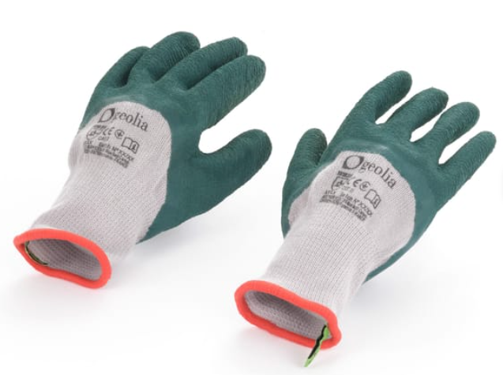
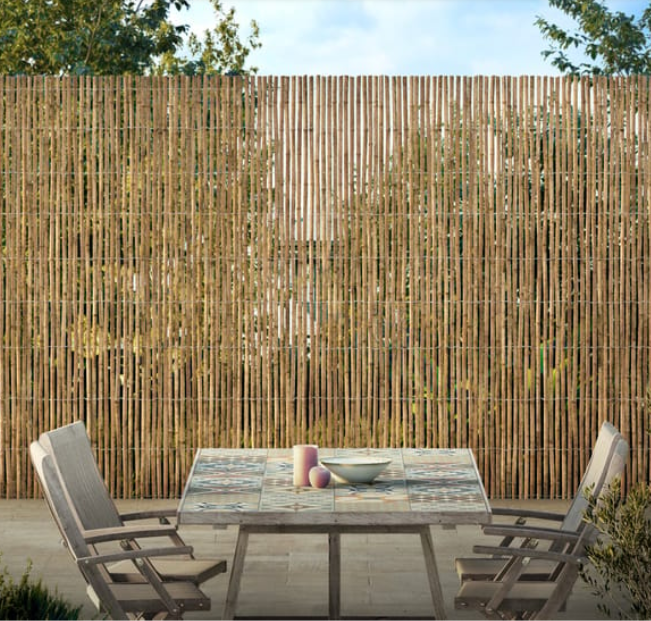
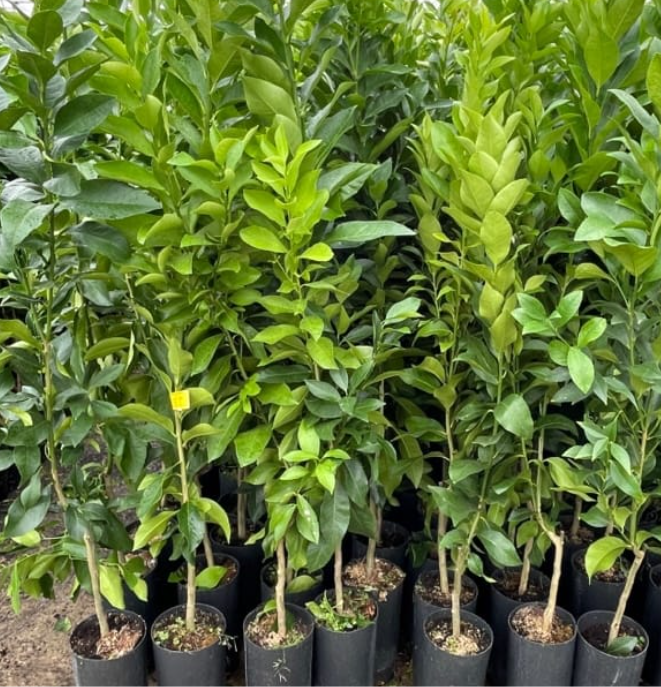
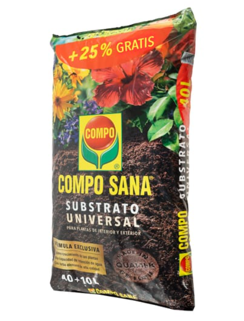

Consulta nuestros productos destacados
Guantes
Guantes Geolia indicados para trabajos de jardinería con interior confeccionado en poliéster, exterior en látex y acabado multicolor. Protege palma y dedos. Ofrece 3 años de garantía.

Precio: 3.87€
Cañizo de bambú
Cañizo Naterial compuesto por bambú fino, ideal para la delimitación y ocultamiento de tu jardín o terraza. Su densidad de 600 g/m² te aportará una ocultación media además del toque rústico y natural. El bambú está ensamblado con alambre de hierro galvanizado, de gran resistencia.

Precio: 10.99€/m
Limonero
La variedad de limonero Eureka o Cuatro estaciones es la variedad de limonero más popular en todo el mundo, debido a que da frutos durante todo el año. Es un árbol de tamaño mediano y presenta menos espinas que otras variedades de limoneros. Esta variedad se da más en climas cálidos, ya que es poco resistente al frío, por lo que recomendamos protegerlo en invierno cuando haya riesgo de heladas.

Precio: 6.22€/unidad
Sustrato universal
Sustrato universal esponjoso Compo Sana de gran calidad idóneo para plantas de interior y exterior, verdes y con flor. El sustrato compuesto por mezcla de turba, perlita y agrosil mantiene todas las características garantizando el perfecto crecimiento de las plantas y potenciando la raíz. Su envase de grandes dimensiones permite abonar con eficacia grandes jardines o huertos.

Precio: 17.00€/5L